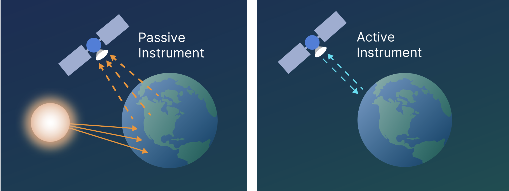
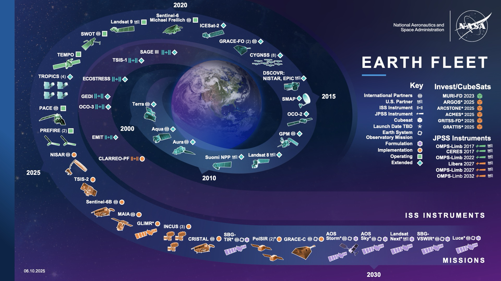
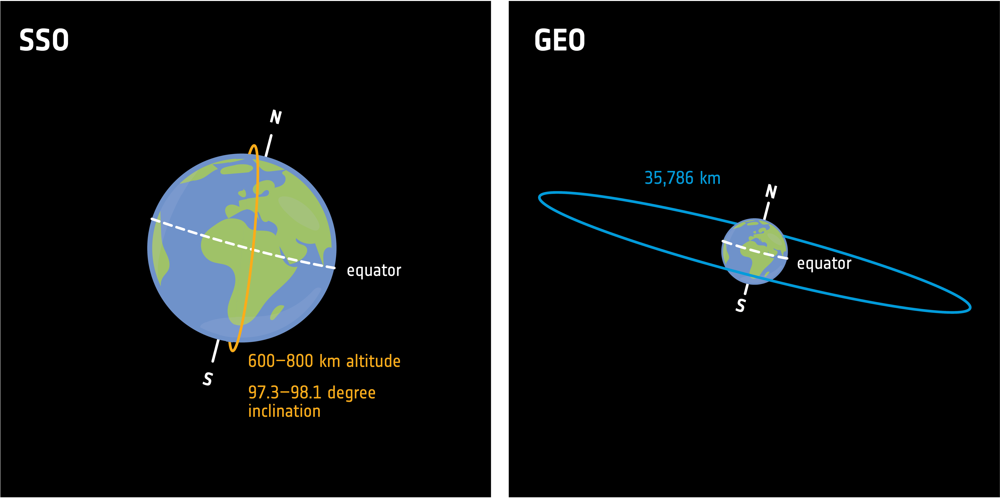
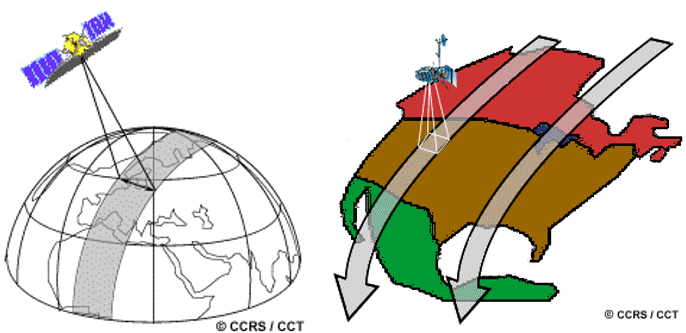
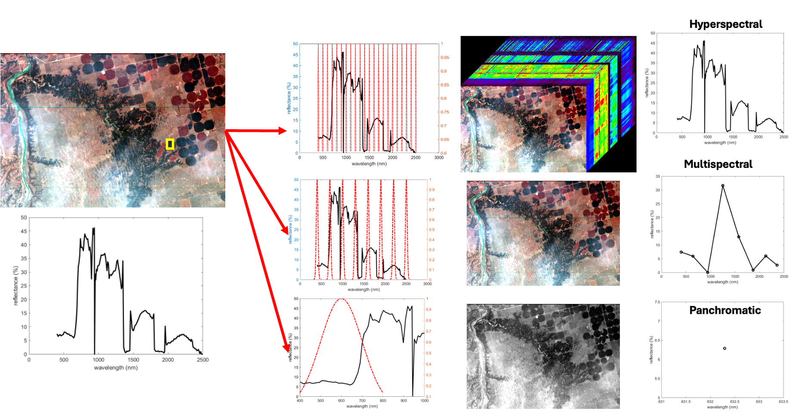
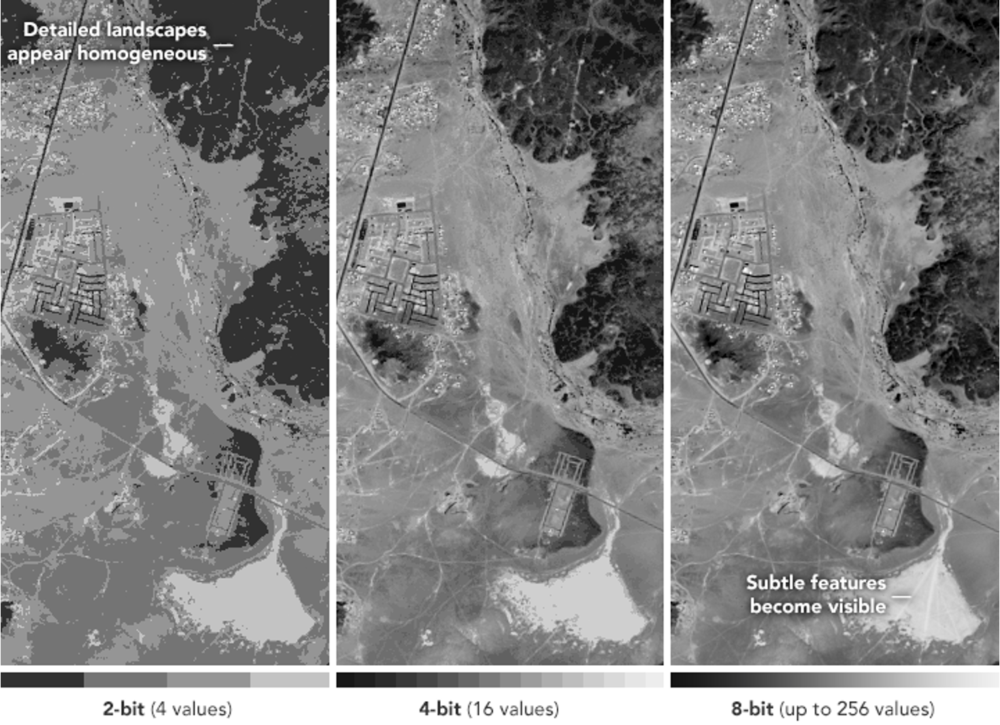

17 Remote sensing sensors and platforms
Differentiate between passive and active sensors.
Identify common remote sensing platforms (satellites, UAVs, aircraft) and explain their advantages.
Explain how sensor characteristics (spatial, spectral, temporal, and radiometric resolutions) affect the data used in GIS.
Broadly, remote sensing sensors can be separated to two different categories depending on energy source they use, including passive and active sensors Figure 17.1. Sensors that use natural energy are called passive sensors, with most of them operating in the visible, infrared, thermal infrared, and microwave portions of the electromagnetic spectrum. In contrast, sensors that carry their own source of energy are called active sensors. In this case, sensors send out a pulse of energy and detects the difference between original signal and the return signal reflected by the target.

While remote sensing is often associated with satellite-based systems, sensors can be deployed on a variety of platforms, including satellites, aircraft, drones (also known as unmanned aerial vehicles, UAVs), and ground-based (proximal) systems. These different platforms enable data collection across a wide range of spatial and temporal scales, providing complementary information about the target Figure 17.2. Specifically, fine-scale measurements, such as those from drones or proximal platforms, can capture detailed local patterns, while broader-scale observations from aircraft or satellites can reveal regional or global trends. Together, these multi-scale measurements give a more complete understanding of the features and processes on the Earth surface.

Among the various remote sensing platforms, satellites play a particularly important role due to their ability to collect data consistently over large geographic areas Figure 17.3. Unlike aircraft or drones, which are typically used for localized or short-term observations, satellite systems provide repeated, long-term coverage of the Earth’s surface. This makes them especially valuable for continuously monitoring environmental change, mapping land cover, and supporting many GIS applications that require regional to global datasets.

Satellites orbits are generally classified into two main categories: polar orbiting and non-polar orbiting Figure 17.4. Polar-orbiting platforms are typically inclined close to 90 degrees relative to the equator and travel from pole to pole as the Earth rotates beneath them. This configuration allows onboard sensors to achieve near-global coverage over time. Many of these platforms are Sun-synchronous, meaning they pass over the same location at approximately the same local solar time during each orbit, ensuring consistent illumination conditions. In contrast, non-polar orbit platforms (such as the geostationary or low orbit satellites) cover only a limited range of latitudes and therefore do not provide complete global coverage.

As a satellite orbits the Earth, its sensor captures a specific portion of the surface, known as the swath (Figure 5). The width of a satellite’s swath ranges from tens to hundreds of kilometers, depending on the specific design and altitude of the sensor. For polar-orbiting satellite, while the satellite travels from pole to pole, its east-west position relative to space remains nearly constant. However, because the Earth rotates from west to east beneath it, the satellite appears to shift westward when viewed from the ground (Figure 5 right). This apparent movement causes each consecutive pass to image a new area, allowing the satellite’s swaths to gradually cover the entire surface.

The satellite’s swath width determines how much of the Earth’s surface can be captured in a single pass, but it is only one aspect of the data. To fully understand and interpret remote sensing imagery, it is also important to consider the resolutions of the data. These include spatial, temporal, spectral, and radiometric resolutions.
Spatial resolution determines the geographical area covered by a pixel in an image. The higher the spatial resolution, the less area (more details) is covered by a single pixel Figure 17.6. Depending on characteristics of satellite and sensor onboard, the spatial resolution of satellite sensors varies from less than one meter to a few thousand kilometers. For example, launched in February 2025, Maxar’s WorldView Legion satellites 5 and 6 can deliver 30 cm resolution for panchromatic imagery.

Spectral resolution defines the ability of a sensor to detect fine wavelength intervals. The narrower a wavelength range is, the finer the spectral resolution Figure 17.7. Many sensors are multispectral, meaning they record data in a small number of broad wavelength bands, typically 3 to 10. In contrast, hyperspectral sensors capture data in hundreds or even thousands of narrow, contiguous bands, providing much more detailed spectral information.

Temporal resolution determines the time it takes for a satellite to complete an orbit and revisit the same observation area. It depends on the orbit, the sensor’s characteristics, and the swath width. While geostationary satellites can capture data within 30s - 1min, revisit time for polar orbiting satellites varies among missions. For example, MODIS has daily revisit time, but revisit time of Landsat is 16 days.
Radiometric resolution describes the amount of information in each pixel, expressed as the number of bits representing the energy recorded. Here, each bit corresponds to a power of 2. For example, an 8-bit sensor can record 28=256 possible digital values (from 0 to 255). Higher radiometric resolution allows a sensor to capture finer differences in energy, improving the ability to distinguish subtle variations in the observed surface (Figure 8).

Together, the swath and these resolutions define the scale, frequency, and quality of information available from a remote sensing platform. In practical, it is impossible to combine all of the desirable features into one remote sensor. For example, to acquire observations with high spatial resolution, a narrower swath is required, which in turn requires more time between observations of a given area resulting in a lower temporal resolution. Thus, depending on specific goals of research or application, certain compromises need to be made. For instance, when researching weather, which is very dynamic over time, having a fine temporal resolution is critical. In this case, geostationary satellites (such as GOES-R) are designed for this task. While achieving high temporal resolution, spatial resolutions of geostationary satellites are low (between 0.5-2 km). In contrast, if the goal is to study seasonal vegetation changes, a fine temporal resolution may be sacrificed for a higher spectral and/or spatial resolution.
References
Cogliati S, Sarti F, Chiarantini L, Cosi M, Lorusso R, Lopinto E, Miglietta F, Genesio L, Guanter L, Damm A, Pérez-López S, Scheffler D, Tagliabue G, Panigada C, Rascher U, Dowling TPF, Giardino C, Colombo R. The PRISMA imaging spectroscopy mission: overview and first performance analysis. Remote Sensing of Environment. 2021;262.
Gamon JA, Wang R, Gholizadeh H, Zutta B, Townsend P, Cavender-Bares J. Consideration of scale in remote sensing of biodiversity. In: J C-B, Ja G, Pa T, editors. Cham: Springer; 2020. p. 425-47.
Wang R, Gamon JA, Cavender-Bares J, Townsend PA, Zygielbaum AI. The spatial sensitivity of the spectral diversity-biodiversity relationship: an experimental test in a prairie grassland. Ecological Applications. 2018;28(2):541-56.